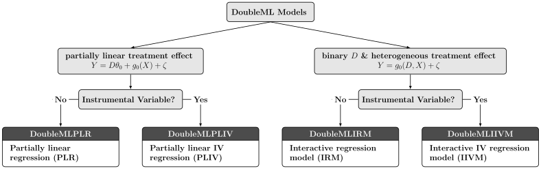

DoubleML Workflow#
The following steps, which we call the DoubleML workflow, are intended to provide a rough structure for causal analyses with DoubleML. After a short explanation of the idea of each step, we illustrate their meaning in the 401(k) example. In case you are interested in more details of the 401(k) example, you can visit the Python and R Notebooks that are available online.
0. Problem Formulation#
The initial step of the DoubleML workflow is to formulate the causal problem at hand. Before we start our statistical analysis, we have to explicitly state the conditions required for a causal interpretation of the estimator, which will be computed later. In many cases, directed acyclical graphs (DAGs) are helpful to formulate the causal problem, illustrate the involved causal channels and the critical parts of the inferential framework. At this stage, a precise argumentation and discussion of the research question is crucial.

In the 401(k) study, we are interested in estimating the average treatment effect of participation in so-called 401(k) pension plans on employees’ net financial assets. Because we cannot rely on a properly conducted randomized control study in this example, we have to base our analysis on observational data. Hence, we have to use an identification strategy that is based on appropriately controlling for potential confounders. A complication that arises in the 401(k) example is due to so-called endogeneity of the treatment assignment. The treatment variable is an employee’s participation in a 401(k) pension plan which is a decision made by employees and likely to be affected by unobservable effects. For example, is seems reasonable that persons with higher income have stronger preferences to save and also to participate in a pension plan. If our analysis does not account for this self-selection into treatment, the estimated effect is likely to be biased.
To circumvent the endogenous treatment problem, it is possible to exploit randomness in eligibility for 401(k) plans. In other words, the access to the treatment can be considered as randomly assigned once we control for confounding variables. Earlier studies in this context argue that if characteristics that are related to saving preferences are taken into account, eligibility can be considered as good as randomly assigned (at the time 401(k) plans were introduced). The conditional exogeneity in the access to treatment makes it possible to estimate the causal effect of interest by using an instrumental variable (IV) approach. However, for the sake of brevity, we will focus on the so-called intent-to-treat effect in the following. This effect corresponds to the average treatment effect of eligibility (= the instrument) on net financial assets (= the outcome) and is of great interest in many applications. The IV analysis is available in the Python and R Notebooks that are available online.
The previous discussion focuses on the causal problem. Let’s also talk about the statistical methods used for estimation. For identification of the average treatment effect of participation or eligibility on assets, it is crucial that we appropriately account for the confounding factors. That’s where the machine learning tools come into play. Of course, we could simply estimate the causal effect by using a classical linear (IV) regression model: The researcher has to manually pick and, perhaps, transform the confounding variables in the regression model. However, machine learning techniques offer greater flexibility in terms of a more data-driven specification of the main regression equation and the first stage.
1. Data-Backend#
In Step 1., we initialize the data-backend and thereby declare the role of the outcome, the treatment, and the confounding variables.
We use data from the 1991 Survey of Income and Program Participation which is available via the function
fetch_401K (Python)
or fetch_401k (R).
The data-backend can be initialized from various data frame objects in Python and R. To estimate the intent-to-treat effect in the
401(k) example, we use eligibility (e401) as the treatment variable of interest. The outcome variable is net_tfa and we
control for confounding variables ['age', 'inc', 'educ', 'fsize', 'marr', 'twoearn', 'db', 'pira', 'hown'].
In [1]: from doubleml import DoubleMLData
In [2]: from doubleml.datasets import fetch_401K
In [3]: data = fetch_401K(return_type='DataFrame')
# Construct DoubleMLData object
In [4]: dml_data = DoubleMLData(data, y_col='net_tfa', d_cols='e401',
...: x_cols=['age', 'inc', 'educ', 'fsize', 'marr',
...: 'twoearn', 'db', 'pira', 'hown'])
...:
library(DoubleML)
data = fetch_401k(return_type='data.table')
# Construct DoubleMLData object from data.table
dml_data = DoubleMLData$new(data, y_col='net_tfa', d_cols='e401',
x_cols=c('age', 'inc', 'educ', 'fsize',
'marr', 'twoearn', 'db', 'pira',
'hown'))
data_frame = fetch_401k(return_type='data.frame')
# Construct DoubleMLData object from data.frame
dml_data_df = double_ml_data_from_data_frame(data_frame,
y_col='net_tfa',
d_cols='e401',
x_cols=c('age', 'inc',
'educ', 'fsize',
'marr', 'twoearn',
'db', 'pira',
'hown'))
2. Causal Model#
In Step 2. we choose a causal model. There are several models currently implemented in DoubleML which differ in terms of the underlying causal structure (e.g., including IV variables or not) and the underlying assumptions.
{kind=link}
According to the previous discussion, we are interested in estimation of the effect of eligibility on net financial assets. Hence, we do not need to use a model with both a treatment and instrumental variable. There are two potential models, the partially linear regression model (PLR) and the interactive regression model (IRM). These models differ in terms of the type of the treatment variable (continuous vs. binary treatment) and the assumptions underlying the regression equation. For example, the PLR assumes a partially linear structure, whereas the IRM allows treatment effects to be heterogeneous across individuals. To keep the presentation short, we will choose a partially linear model.
3. ML Methods#
In Step 3., we can specify the machine learning tools used for estimation of the nuisance parts. We can generally choose any learner from scikit learn in Python and from the mlr3 ecosystem in R.
There are two nuisance parts in the PLR, \(g_0(X)=\mathbb{E}(Y|X)\) and \(m_0(X)=\mathbb{E}(D|X)\). In this example, let us specify a random forest and an xgboost learner for both prediction problems. We can directly pass the parameters during initialization of the learner objects. Because we have a binary treatment variable, we can use a classification learner for the corresponding nuisance part. We use a regression learner for the continuous outcome variable net financial assets.
# Random forest learners
In [5]: from sklearn.ensemble import RandomForestClassifier, RandomForestRegressor
In [6]: ml_l_rf = RandomForestRegressor(n_estimators = 500, max_depth = 7,
...: max_features = 3, min_samples_leaf = 3)
...:
In [7]: ml_m_rf = RandomForestClassifier(n_estimators = 500, max_depth = 5,
...: max_features = 4, min_samples_leaf = 7)
...:
# Xgboost learners
In [8]: from xgboost import XGBClassifier, XGBRegressor
In [9]: ml_l_xgb = XGBRegressor(objective = "reg:squarederror", eta = 0.1,
...: n_estimators =35)
...:
In [10]: ml_m_xgb = XGBClassifier(use_label_encoder = False ,
....: objective = "binary:logistic",
....: eval_metric = "logloss",
....: eta = 0.1, n_estimators = 34)
....:
library(mlr3)
library(mlr3learners)
# Random forest learners
ml_l_rf = lrn("regr.ranger", max.depth = 7,
mtry = 3, min.node.size =3)
ml_m_rf = lrn("classif.ranger", max.depth = 5,
mtry = 4, min.node.size = 7)
# Xgboost learners
ml_l_xgb = lrn("regr.xgboost", objective = "reg:squarederror",
eta = 0.1, nrounds = 35)
ml_m_xgb = lrn("classif.xgboost", objective = "binary:logistic",
eval_metric = "logloss",
eta = 0.1, nrounds = 34)
4. DML Specifications#
In Step 4., we initialize and parametrize the model object which will later be used to perform the estimation.
We initialize a DoubleMLPLR (Python) / DoubleMLPLR (R) object using the previously generated data-backend. Moreover, we specify the resampling (= the number of repetitions and folds for repeated cross-fitting), the dml algorithm (DML1 vs. DML2) and the score function (“partialling out” or “IV-type”).
In [11]: from doubleml import DoubleMLPLR
In [12]: np.random.seed(123)
# Default values
In [13]: dml_plr_tree = DoubleMLPLR(dml_data,
....: ml_l = ml_l_rf,
....: ml_m = ml_m_rf)
....:
In [14]: np.random.seed(123)
# Parametrized by user
In [15]: dml_plr_tree = DoubleMLPLR(dml_data,
....: ml_l = ml_l_rf,
....: ml_m = ml_m_rf,
....: n_folds = 3,
....: n_rep = 1,
....: score = 'partialling out')
....:
set.seed(123)
# Default values
dml_plr_forest = DoubleMLPLR$new(dml_data,
ml_l = ml_l_rf,
ml_m = ml_m_rf)
set.seed(123)
# Parametrized by user
dml_plr_forest = DoubleMLPLR$new(dml_data,
ml_l = ml_l_rf,
ml_m = ml_m_rf,
n_folds = 3,
score = 'partialling out',
dml_procedure = 'dml2')
5. Estimation#
We perform estimation in Step 5. In this step, the cross-fitting algorithm is executed such that the predictions in the score are computed. As an output, users can access the coefficient estimates and standard errors either via the corresponding fields or via a summary.
# Estimation
In [16]: dml_plr_tree.fit()
Out[16]: <doubleml.plm.plr.DoubleMLPLR at 0x7f27f1c6ae40>
# Coefficient estimate
In [17]: dml_plr_tree.coef
Out[17]: array([8909.63407762])
# Standard error
In [18]: dml_plr_tree.se
Out[18]: array([1321.82228913])
# Summary
In [19]: dml_plr_tree.summary
Out[19]:
coef std err ... 2.5 % 97.5 %
e401 8909.634078 1321.822289 ... 6318.909997 11500.358158
[1 rows x 6 columns]
# Estimation
dml_plr_forest$fit()
# Coefficient estimate
dml_plr_forest$coef
# Standard error
dml_plr_forest$se
# Summary
dml_plr_forest$summary()
INFO [18:32:39.712] [mlr3] Applying learner 'regr.ranger' on task 'nuis_l' (iter 1/3)
INFO [18:32:41.593] [mlr3] Applying learner 'regr.ranger' on task 'nuis_l' (iter 2/3)
INFO [18:32:42.811] [mlr3] Applying learner 'regr.ranger' on task 'nuis_l' (iter 3/3)
INFO [18:32:44.111] [mlr3] Applying learner 'classif.ranger' on task 'nuis_m' (iter 1/3)
INFO [18:32:45.111] [mlr3] Applying learner 'classif.ranger' on task 'nuis_m' (iter 2/3)
INFO [18:32:46.138] [mlr3] Applying learner 'classif.ranger' on task 'nuis_m' (iter 3/3)
Estimates and significance testing of the effect of target variables
Estimate. Std. Error t value Pr(>|t|)
e401 9127 1313 6.952 3.61e-12 ***
---
Signif. codes: 0 ‘***’ 0.001 ‘**’ 0.01 ‘*’ 0.05 ‘.’ 0.1 ‘ ’ 1
6. Inference#
In Step 6., we can perform further inference methods and finally interpret our findings. For example, we can set up confidence intervals or, in case multiple causal parameters are estimated, adjust the analysis for multiple testing. DoubleML supports various approaches to perform valid simultaneous inference which are partly based on a multiplier bootstrap.
To conclude the analysis on the intent-to-treat effect in the 401(k) example, i.e., the average treatment effect of eligibility for 401(k) pension plans on net financial assets, we find a positive and significant effect: Being eligible for such a pension plan increases the amount of net financial assets by approximately \($9,000\). This estimate is much smaller than the unconditional effect of eligibility on net financial assets: If we did not control for the confounding variables, the average treatment effect would correspond to \($19,559\).
# Summary
In [20]: dml_plr_tree.summary
Out[20]:
coef std err ... 2.5 % 97.5 %
e401 8909.634078 1321.822289 ... 6318.909997 11500.358158
[1 rows x 6 columns]
# Confidence intervals
In [21]: dml_plr_tree.confint()
Out[21]:
2.5 % 97.5 %
e401 6318.909997 11500.358158
# Multiplier bootstrap (relevant in case with multiple treatment variables)
In [22]: dml_plr_tree.bootstrap()
Out[22]: <doubleml.plm.plr.DoubleMLPLR at 0x7f27f1c6ae40>
# Simultaneous confidence bands
In [23]: dml_plr_tree.confint(joint = True)
Out[23]:
2.5 % 97.5 %
e401 6075.923943 11743.344212
# Summary
dml_plr_forest$summary()
# Confidence intervals
dml_plr_forest$confint()
# Multiplier bootstrap (relevant in case with multiple treatment variables)
dml_plr_forest$bootstrap()
# Simultaneous confidence bands
dml_plr_forest$confint(joint = TRUE)
Estimates and significance testing of the effect of target variables
Estimate. Std. Error t value Pr(>|t|)
e401 9127 1313 6.952 3.61e-12 ***
---
Signif. codes: 0 ‘***’ 0.001 ‘**’ 0.01 ‘*’ 0.05 ‘.’ 0.1 ‘ ’ 1
| 2.5 % | 97.5 % | |
|---|---|---|
| e401 | 6553.684 | 11700.31 |
| 2.5 % | 97.5 % | |
|---|---|---|
| e401 | 6553.428 | 11700.57 |
7. Sensitivity Analysis#
In Step 7., we can analyze the sensitivity of the estimated parameters. In the Partially linear regression model (PLR) the causal interpretation relies on conditional exogeneity, which requires to control for confounding variables. The DoubleML python package implements Sensitivity analysis with respect to omitted confounders.
Analyzing the sensitivity of the intent-to-treat effect in the 401(k) example, we find that the effect remains positive even after adjusting for omitted confounders with a lower bound of \($4,611\) for the point estimate and \($2,359\) including statistical uncertainty.
# Sensitivity analysis
In [24]: dml_plr_tree.sensitivity_analysis(cf_y=0.04, cf_d=0.03)
Out[24]: <doubleml.plm.plr.DoubleMLPLR at 0x7f27f1c6ae40>
# Sensitivity summary
In [25]: print(dml_plr_tree.sensitivity_summary)
================== Sensitivity Analysis ==================
------------------ Scenario ------------------
Significance Level: level=0.95
Sensitivity parameters: cf_y=0.04; cf_d=0.03, rho=1.0
------------------ Bounds with CI ------------------
CI lower theta lower theta theta upper CI upper
0 2359.496777 4610.983759 8909.634078 13208.284397 15430.415812
------------------ Robustness Values ------------------
H_0 RV (%) RVa (%)
0 0.0 7.029209 5.233154